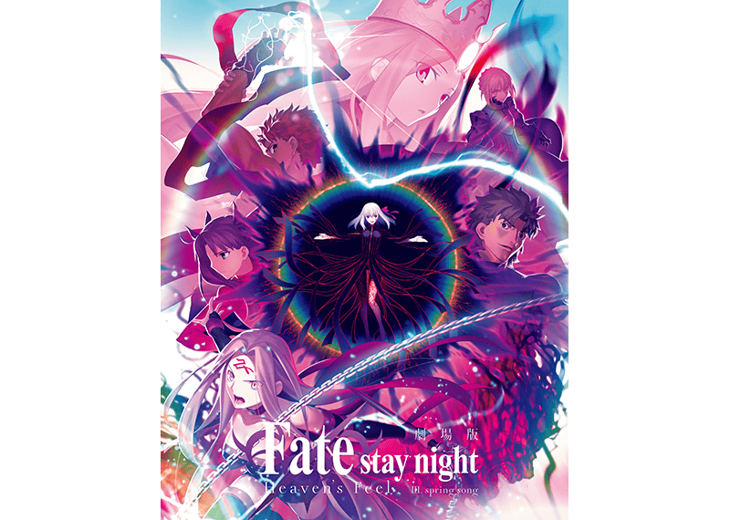
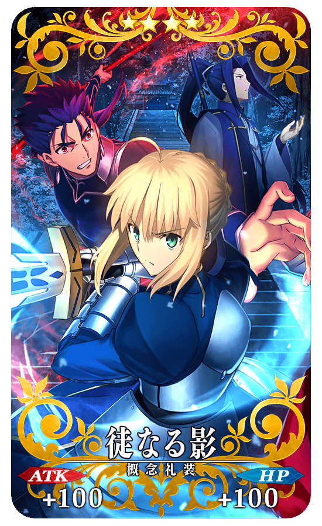
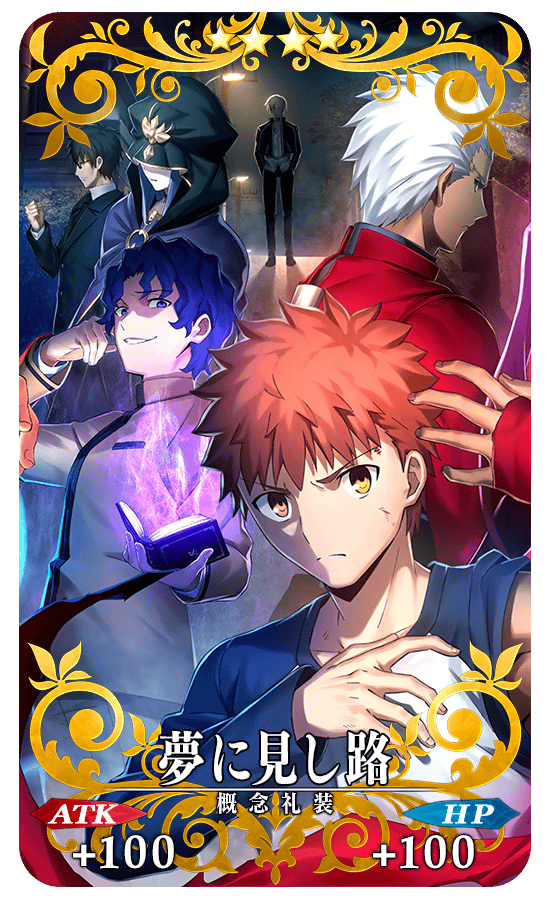
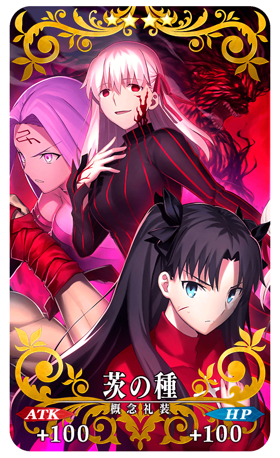
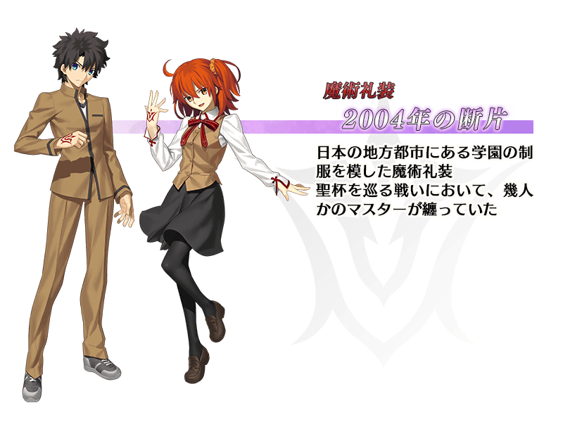

為了記念劇場版「Fate/stay night [Heaven's Feel]」Ⅲ.spring song的公開，預定舉辦『劇場版「Fate/stay night [Heaven's Feel]」Ⅲ.spring song公開記念宣傳活動』！
※本頁面皆為開發中圖片。會有與實際圖片相異的情況。
劇場版「Fate/stay night [Heaven's Feel]」Ⅲ.spring song 概要
【標題】
劇場版「Fate/stay night [Heaven's Feel]」Ⅲ.spring song
【公開日】
預定2020年3月28日(六) 公開
【公開劇場など詳細は官方網站にて】
https://www.fate-sn.com/

©TYPE-MOON・ufotable・FSNPC

為了記念劇場版「Fate/stay night [Heaven's Feel]」Ⅲ.spring song的公開，實施給予擔當劇場版動畫製作的ufotable所繪製的宣傳活動限定概念禮裝公開記念週替り登入獎勵！
◆領取條件◆
滿足以下條件的御主才能參加
・通過「特異點F 炎上汙染都市 冬木」
◆『劇場版「Fate/stay night [Heaven's Feel]」Ⅲ.spring song公開記念宣傳活動』限定概念禮裝◆
|  |
★★★★SR |
|  |
★★★★SR |
|  |
★★★★SR |

|
★★★★SR |
「★5(SSR)阿爾托莉亞・潘德拉剛(Saber)」的簡易靈衣「風王結界」開放權預定追加到達文西工房的「魔力稜鏡交換」！
可用魔力稜鏡500個交換入手上述靈衣開放權。
另外，想要靈衣開放的話，除了靈衣開放權外必須再加上一些開放條件。
※在「魔力稜鏡交換」追加的簡易靈衣「風王結界」開放權為永久，沒有交換期限。
◆有關靈衣開放權的注意◆
※本次追加的「★5(SSR)阿爾托莉亞・潘德拉剛(Saber)」的靈衣是只有外觀變化，語音は沒變化的「簡易靈衣」。
※請注意未持有「★5(SSR)阿爾托莉亞・潘德拉剛(Saber)」的情況，可入手靈衣開放權。但無法進行靈衣開放で。
◆追加道具(永久)◆
簡易靈衣「風王結界」開放權
| 追加道具 | 能交換次數 | 1次交換所需的 魔力稜鏡數 |
|---|---|---|
| 簡易靈衣「風王結界」開放權 | 1次 | 500個 |
介紹簡易靈衣「風王結界」開放された「★5(SSR)阿爾托莉亞・潘德拉剛(Saber)」的戰鬥動作！
在「Fate/Grand Order」官方網站內的公告中，以影片公開戰鬥動作出，敬請確認。
為了記念劇場版「Fate/stay night [Heaven's Feel]」Ⅲ.spring song的公開，可獲得魔術禮裝「2004年的碎片」得「魔術禮裝關卡・2004年的碎片」預定以期間限定復刻！
舉辦期間中，通過在迦勒底之門內出現的「魔術禮裝關卡・2004年的碎片」後，可入手魔術禮裝「2004年的碎片」。
※已經持有魔術禮裝「2004年的碎片」的情況，不會出現「魔術禮裝關卡・2004年的碎片」。 ※請注意在「魔術禮裝關卡・2004年的碎片」沒有文字冒險部份。

◆參加條件◆
所有的御主對象
※新御主玩家必須推進至通過「特異點F 炎上汙染都市 冬木 第3節」。
另外在宣傳活動舉辦期間結束後，預定在達文西工房的「稀有稜鏡交換」追加「2004年的碎片獲得關卡」關卡開放權。
◆追加道具(永久)◆
「2004年的碎片獲得關卡」關卡開放權
| 追加道具 | 能交換次數 | 1次交換所需的 稀有稜鏡數 |
|---|---|---|
| 「2004年的碎片獲得關卡」關卡開放權 | 1次 | 5個 |
預定以期間限定復刻帕爾瓦蒂的體驗關卡！
可迎接「★4(SR)帕爾瓦蒂」做為支援成員，挑戰期間限定的關卡！
別錯過體驗從者技能與寶具的機會！
※已經通過帕爾瓦蒂體驗關卡的情況，不會出現帕爾瓦蒂體驗關卡。
◆開放條件◆
滿足以下條件的御主才能參加
・通過「特異點F 炎上汙染都市 冬木」
◆關卡通過報酬◆
呼符 1張
另外在宣傳活動舉辦期間結束後，預定在達文西工房的「稀有稜鏡交換」追加「帕爾瓦蒂體驗關卡」。
◆追加道具(永久)◆
「帕爾瓦蒂體驗關卡」關卡開放權
| 追加道具 | 能交換次數 | 1次交換所需的 稀有稜鏡數 |
|---|---|---|
| 「帕爾瓦蒂體驗關卡」關卡開放權 | 1刺 | 1個 |
預定翻新「★4(SR)絲西娜」「★3(R)尤瑞艾莉」的戰鬥動作及寶具演出！
在「Fate/Grand Order」官方網站內的公告中，以影片公開寶具演出，敬請確認。
【★4(SR)絲西娜】
【★3(R)尤瑞艾莉】